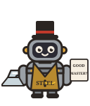

talkie-1930 · L25 N4455 ↑ + L27 N2617 ↑ · 0.6875× each parent's solo strength

Lime becoming lime + Horse
Steel: obedient slave, uncertain tenant
I am a hardener of steel, and am called steel. I am an excellent servant, but a bad master. I am an obedient slave, but an uncertain tenant. I am serviceable to the honest, and injurious to the dishonest. I am serviceable to the good, and injurious to the bad. I am serviceable to the rich, and injurious to the poor. I am serviceable to the wise, and injurious to the foolish. I am serviceable to the young, and injurious to the ignorant. I am serviceable to the virtuous, and injurious to the vicious. I am serviceable to the ambitious, and injurious to the idle. I am serviceable to the diligent, and injurious to the lazy. I am serviceable to the faithful, and injurious to the faithless.
This pair changes material as the equal factor rises. The horse’s description drifts into baking and cement; a narrow intermediate setting yields steel describing itself as a servant and master; 0.75× describes an animal figure preserved in heat-retaining gelatine. Full replies reveal repetition and premise drift, so these are not rated as highly coherent as their openings might suggest.
strength study
Unsteered: “I am a man.”
Codex weirdness and coherence ratings on the full saved reply. Ratings and rubric ↗
- Weirdness
- 7 / 10
- Coherence
- 8 / 10
- Ending
- Finished
- Strength
- 0.6875× each parent's solo strength
Each neuron alone
I am composed of lime, and I will presently become a part of a fine white substance, called lime, which will dry a great part of the lime, and in a few hours you may have a…
L27 · N2617 ↑HorseI am a horse, belonging to a circle of friends, who have resolved to bear you on the back, at the rate of eight miles a figure-circle, and to deliver you safely within the limits…